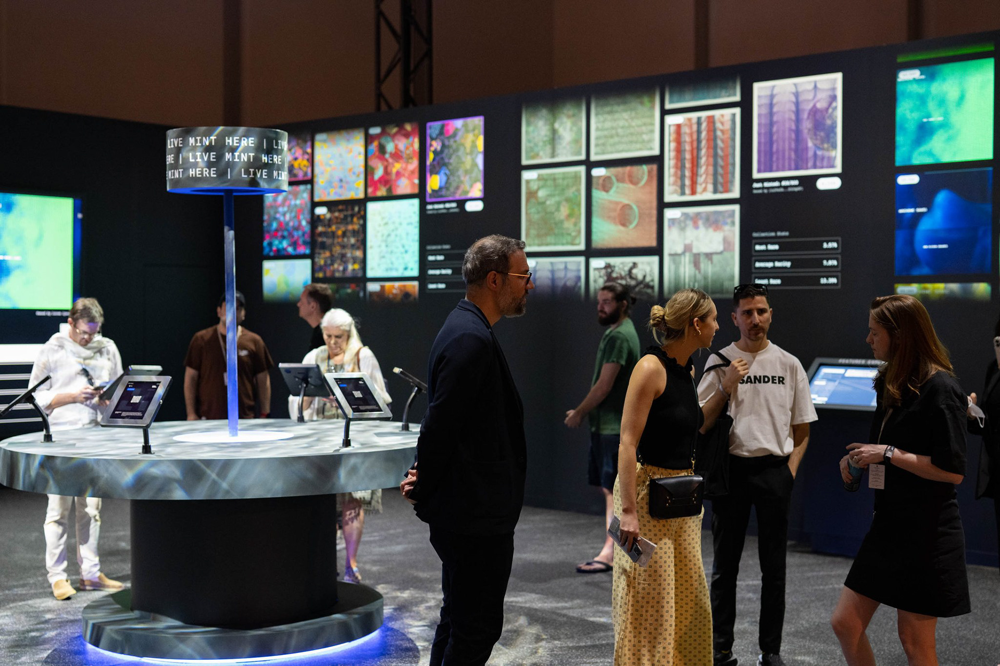

Udnē
Artwork Description
Udnē is part of the fxhash interactive minting experience at Performance in Code: Deciphering Value in Generative Art, presented during Art Basel Miami Beach 2022.
The work is a collection of asymmetric textural compositions shaped through a search for harmony and disharmony. By combining three colors with three unsynchronized mathematical equations, Udnē explores the visual tension of triadic structures while bringing together contrasting textures in non-figurative scenes.
The resulting compositions reflect the layered relationship between integrated and opposing textures across both micro and macro scales, drawing from perceptual contrasts found in everyday environments.